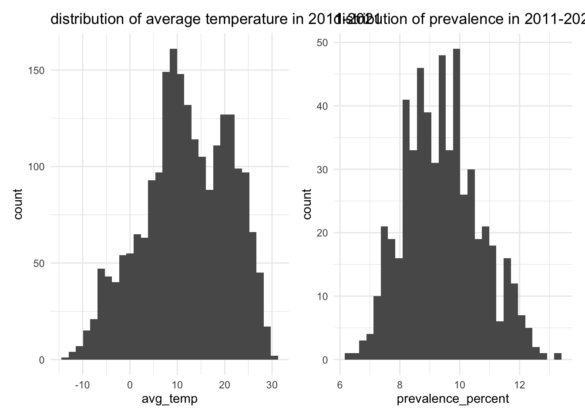
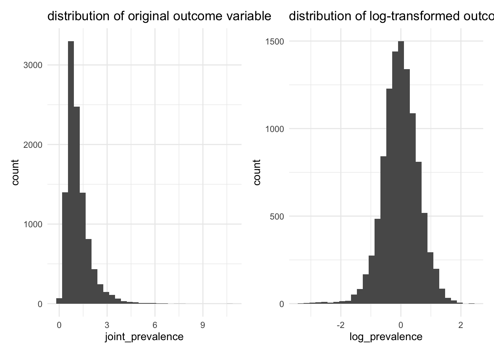

Regression Analysis
We first conducted a single linear regression with annual average temperature of each state as only predictor, then on data stratified by race, finally on data stratified by race, income, and temperature to see which was a better fit model
Initial Analysis: Simple Linear Regression
For this part, we want to know if temperature is the significant factor that influence asthma prevalence. Before we perform linear regression model, it is necessary to check if data follows normal distribution:
temp_dist =
temp_df |>
ggplot(aes(x = avg_temp)) +
geom_histogram() +
labs(
title = "distribution of average temperature in 2011-2021",
xlab = "average temperature",
ylab = "frequency"
)
asthma_dist =
asthma_df |>
ggplot(aes(x = prevalence_percent)) +
geom_histogram() +
labs(
title = "distribution of prevalence in 2011-2021",
xlab = "prevalence (percent)",
ylab = "frequency"
)
temp_dist + asthma_dist
As seen, the two variables generally follow normal distribution, so we can perform the regression model.
Linear Regression Results
model = lm(prevalence_percent ~ avg_temp_yearly, data = merged_df)
model_summary = summary(model)
summary(model) %>%
broom::tidy() %>%
knitr::kable(digit = 3)| term | estimate | std.error | statistic | p.value |
|---|---|---|---|---|
| (Intercept) | 10.186 | 0.139 | 73.544 | 0 |
| avg_temp_yearly | -0.067 | 0.011 | -6.187 | 0 |
par(mfrow = c(2,2))
plot(model)
The diagnostic plot shows that the model follows normality, but may exist heteroscedasticity. From the model summary, annual average temperature is significant with small estimate with R-Squared of 0.066, indicating that although temperature is a influential factor, it does not explain much about asthma prevalence. As a result, we keep investigating some other factors that could result in asthma prevalence. The formula for this model is:
\[ \widehat{Prevalence} = 10.186 -0.067 \cdot temperature + \epsilon \]
Regression of Data Stratified by Race
Next, we want to know if race also has impact on asthma prevalence. Since race is a categorical data, we factorize it and perform multiple linear regression model starting with main effect:
Linear Regression (main effects):
lm_by_race = lm(prevalence_percent ~ avg_temp_yearly + race_ethnicity, data = race_asthma_df)
model_summary = summary(lm_by_race)
summary(lm_by_race)%>%
broom::tidy() %>%
knitr::kable(digit = 3) |>
kableExtra::kable_styling(bootstrap_options = c("striped", "hover"), font_size = 12) |>
kableExtra::scroll_box(width = "100%", height = "300px")| term | estimate | std.error | statistic | p.value |
|---|---|---|---|---|
| (Intercept) | 18.059 | 0.725 | 24.910 | 0.000 |
| avg_temp_yearly | -0.144 | 0.020 | -7.068 | 0.000 |
| race_ethnicityBlack NH | 0.541 | 0.725 | 0.747 | 0.455 |
| race_ethnicityHispanic | -2.641 | 0.721 | -3.663 | 0.000 |
| race_ethnicityMultirace-NH | 6.371 | 0.972 | 6.556 | 0.000 |
| race_ethnicityMultirace NH | 7.101 | 0.725 | 9.799 | 0.000 |
| race_ethnicityOther-NH | -3.278 | 0.972 | -3.372 | 0.001 |
| race_ethnicityOther NH | -3.010 | 0.724 | -4.155 | 0.000 |
| race_ethnicityWhite-NH | -1.714 | 0.972 | -1.764 | 0.078 |
| race_ethnicityWhite NH | -2.594 | 0.724 | -3.584 | 0.000 |
par(mfrow = c(2,2))
plot(lm_by_race)
race_asthma_df =
race_asthma_df %>%
mutate(yhat = predict(lm_by_race, newdata = race_asthma_df))
ggplot(race_asthma_df, aes(x = avg_temp_yearly, y = prevalence_percent, color = race_ethnicity)) +
geom_point() +
geom_line(aes(y = yhat)) +
facet_wrap(~ race_ethnicity) +
labs(
title = "Asthma Prevalence by Race and Temperature",
x = "Average Yearly Temperature",
y = "Asthma Prevalence (%)",
caption = "line shows predicted prevalence % equation and data points show actual asthma prevalence"
) +
theme(legend.position="none")
From the scatter plot of prevalence by race and temperature, we can see that the trend line is almost horizontal no matter what races are, which represents that temperature might not have much association with asthma prevalence.
The model shows that all race but Black are significant, with R-squared of 0.392, which is much higher than simple linear regression model. The diagnostic plots also show better results than previous model.
Linear Regression (interaction model):
interaction_model = lm(prevalence_percent ~ avg_temp_yearly * race_ethnicity, data = race_asthma_df)
summary(interaction_model)%>%
broom::tidy() %>%
knitr::kable(digit = 3) |>
kableExtra::kable_styling(bootstrap_options = c("striped", "hover"), font_size = 12) |>
kableExtra::scroll_box(width = "100%", height = "300px")| term | estimate | std.error | statistic | p.value |
|---|---|---|---|---|
| (Intercept) | 16.323 | 1.650 | 9.892 | 0.000 |
| avg_temp_yearly | 0.009 | 0.132 | 0.069 | 0.945 |
| race_ethnicityBlack NH | 2.942 | 1.766 | 1.666 | 0.096 |
| race_ethnicityHispanic | -0.442 | 1.748 | -0.253 | 0.801 |
| race_ethnicityMultirace-NH | 7.230 | 2.334 | 3.099 | 0.002 |
| race_ethnicityMultirace NH | 9.986 | 1.763 | 5.664 | 0.000 |
| race_ethnicityOther-NH | -2.786 | 2.334 | -1.194 | 0.233 |
| race_ethnicityOther NH | -1.608 | 1.761 | -0.913 | 0.361 |
| race_ethnicityWhite-NH | -1.271 | 2.334 | -0.545 | 0.586 |
| race_ethnicityWhite NH | -2.082 | 1.760 | -1.183 | 0.237 |
| avg_temp_yearly:race_ethnicityBlack NH | -0.208 | 0.141 | -1.479 | 0.139 |
| avg_temp_yearly:race_ethnicityHispanic | -0.192 | 0.140 | -1.375 | 0.169 |
| avg_temp_yearly:race_ethnicityMultirace-NH | -0.076 | 0.187 | -0.405 | 0.686 |
| avg_temp_yearly:race_ethnicityMultirace NH | -0.249 | 0.141 | -1.773 | 0.076 |
| avg_temp_yearly:race_ethnicityOther-NH | -0.043 | 0.187 | -0.232 | 0.817 |
| avg_temp_yearly:race_ethnicityOther NH | -0.125 | 0.141 | -0.887 | 0.375 |
| avg_temp_yearly:race_ethnicityWhite-NH | -0.039 | 0.187 | -0.209 | 0.834 |
| avg_temp_yearly:race_ethnicityWhite NH | -0.050 | 0.140 | -0.354 | 0.723 |
par(mfrow = c(2,2))
plot(interaction_model)
<<<<<<< HEAD The regression model predicts prevalence_percent using the interaction between avg_temp_yearly and race_ethnicity as predictors. The interaction effects suggest that the relationship between average temperature and asthma prevalence varies across race groups, but only a few interactions are statistically significant. Independent of temperature, some racial groups such as Hispanic, White-NH, Other-NH have significantly different asthma prevalence rates compared to the baseline group since they have larger coefficients.
Overall, the model explains a moderate amount of variability in the data (~39%), and the predictors are collectively significant.
Logistic Fit:
fit_logistic = glm(prevalence_prop ~ avg_temp_yearly + race_ethnicity,
data = race_asthma_df,
family = binomial())
broom::tidy(fit_logistic) %>%
knitr::kable(digit = 3) |>
kableExtra::kable_styling(bootstrap_options = c("striped", "hover"), font_size = 12) |>
kableExtra::scroll_box(width = "100%", height = "300px")| term | estimate | std.error | statistic | p.value |
|---|---|---|---|---|
| (Intercept) | -1.505 | 0.407 | -3.699 | 0.000 |
| avg_temp_yearly | -0.011 | 0.012 | -0.928 | 0.354 |
| race_ethnicityBlack NH | 0.039 | 0.406 | 0.097 | 0.923 |
| race_ethnicityHispanic | -0.207 | 0.407 | -0.508 | 0.612 |
| race_ethnicityMultirace-NH | 0.407 | 0.515 | 0.792 | 0.429 |
| race_ethnicityMultirace NH | 0.450 | 0.402 | 1.120 | 0.263 |
| race_ethnicityOther-NH | -0.261 | 0.572 | -0.456 | 0.648 |
| race_ethnicityOther NH | -0.239 | 0.410 | -0.581 | 0.561 |
| race_ethnicityWhite-NH | -0.131 | 0.558 | -0.234 | 0.815 |
| race_ethnicityWhite NH | -0.203 | 0.409 | -0.496 | 0.620 |
par(mfrow = c(2,2))
plot(fit_logistic)
As seen, most of the predictors in the interaction model are not significant. Although the r-squared value is slightly higher (R-squared = .3955), the value is not much higher compared to main effects model. This suggests the need for more stratification.
MLR of Race, Income, and Yearly temp
At last, we want to combine all factor together to obtain the regression model. Since in CDC website the prevalence rates for race and for income by each state are different, here we assume the race and income are independent variables so the joint prevalence are their seperate prevalence rate multiplying together. So we need to check the distribution of joint prevalence:
Check distribution
# distribution of outcome variable
dist_plot =
ggplot(full_df, aes(x = joint_prevalence)) +
geom_histogram() +
labs(
title = "distribution of original outcome variable",
xlab = "joint prevalence",
ylab = "Frequency"
)
log_dist_plot =
ggplot(full_df, aes(x = log_prevalence)) +
geom_histogram() +
labs(
title = "distribution of log-transformed outcome variable",
xlab = "Log-prevalence",
ylab = "Frequency"
)
dist_plot + log_dist_plot
Distribution after log-transform looks normal. Now we perform multiple linear regression model:
Regression Results:
model = lm(log_prevalence ~ race + income + avg_temp_yearly, data = full_df)
summary(model)%>%
broom::tidy() %>%
knitr::kable(digit = 3) |>
kableExtra::kable_styling(bootstrap_options = c("striped", "hover"), font_size = 12) |>
kableExtra::scroll_box(width = "100%", height = "300px")| term | estimate | std.error | statistic | p.value |
|---|---|---|---|---|
| (Intercept) | 0.507 | 0.017 | 30.555 | 0.000 |
| raceMultirace | 0.293 | 0.013 | 22.895 | 0.000 |
| raceOther | -0.319 | 0.013 | -25.002 | 0.000 |
| raceWhite | -0.170 | 0.013 | -13.388 | 0.000 |
| raceBlack NH | 0.307 | 0.034 | 8.930 | 0.000 |
| raceHispanic | -0.016 | 0.034 | -0.487 | 0.627 |
| raceOther NH | 0.054 | 0.032 | 1.711 | 0.087 |
| raceWhite NH | 0.062 | 0.030 | 2.076 | 0.038 |
| income$25–$49,999 | -0.283 | 0.014 | -20.696 | 0.000 |
| income$50–$74,999 | -0.414 | 0.014 | -30.278 | 0.000 |
| income< $15,000 | 0.307 | 0.014 | 22.461 | 0.000 |
| income>=$75,000 | -0.503 | 0.014 | -36.816 | 0.000 |
| avg_temp_yearly | -0.026 | 0.001 | -28.047 | 0.000 |
par(mfrow = c(2, 2))
plot(model)
The R-squared is 0.4363, meaning the model explains about 44% of the variance in the log-transformed prevalence, which is ever higher than previous two predictors model. The adjusted R-squared is 0.4356, similar to the R-squared, indicating that the model generalizes well with the predictors.
If we rank the predictors by importance, Income is the strongest predictor category, especially for higher income groups. For example, one unit of income larger than 75K will decrease prevalence rate by 0.81 unit, showing a large reduction in log_prevalence. These effects dominate the model and show a consistent trend of decreasing log_prevalence with higher income.
Significant race effects also exist, for Black and Multi-race, the prevalence rate increase. Other and White decrease prevalence significantly, with Other having the largest absolute impact.
Although temperature is still significant, its effect is smaller compared to income and race.